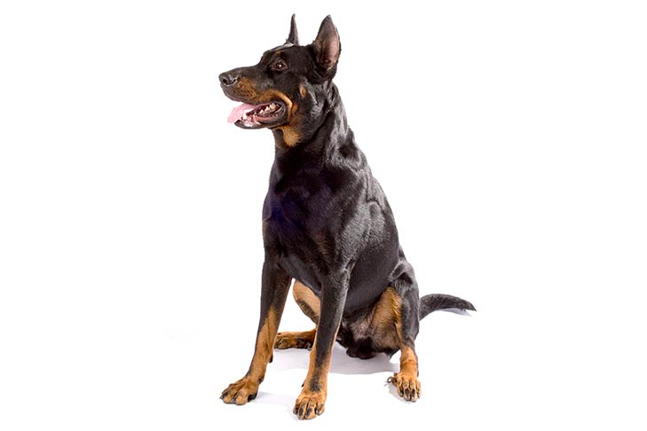
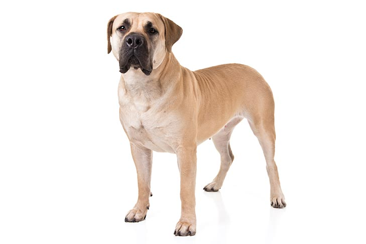

Various Dog Breeds
-
Bearded Collie
A boisterous and charismatic droving dog from Scotland, the shaggy-coated Bearded Collie ('Beardie' to his friends) enjoys outdoor exercise in all weather.
-
Belgian Sheepdog
The first impression of the Belgian Sheepdog is that of a well balanced, square dog, elegant in appearance, with an exceedingly proud carriage of the head.
-

Berger Picard
The Berger Picard is an ancient breed developed by the farmers and sheep herders of the Picardy region of northern France. They are medium-sized and sturdy.
-

Norwegian Buhund
The Norwegian Buhund is a herding dog. It is a typical northern breed, a little under medium size and squarely built, with a tightly curled tail carried over the back.
-

Entlebucher Mountain Dog
The Entlebucher Mountain Dog (Shepherd Dog from Entlebuch) is a native of Switzerland, and the smallest of the four Swiss Sennenhund breeds.
-

German Shepherd
A German Shepherd Dog is a strong, agile, well muscled animal, alert and full of life. It is tall, deep-bodied, with an outline of smooth curves rather than angles.
-

Pembroke Welsh Corgi
Low-set, strong, sturdily built and active, giving an impression of substance and stamina in a small space. Outlook bold, but kindly. Expression, intelligent and interested.
-
Swedish Vallhund
The Swedish Vallhund is a very old Spitz-type breed known since the time of the Vikings. For centuries the SV has been kept as a farm dog and used for herding cattle.
-
Pyrenean Shepherd
A small, lively dog whose sparkling personality and quicksilver intelligence are reflected in the vibrant expression of his unique triangular head and windswept face.
-

Beauceron
The Beauceron is an old and distinct French breed of herding dog, developed solely in France with no foreign crosses. Dogs were bred and selected for herding.
-

Boerboel
The Boerboel developed as a general farm dog for the pioneers who settled in South Africa. These dogs were often the first line of defense against predators.
-
Bull Mastiff
The breed was developed in England by gamekeepers for protection against poachers. Great strength, endurance, and alertness; powerfully built but active.
-

Doberman Pinscher
Compactly built, muscular and powerful, for great endurance and speed. Elegant in appearance, of proud carriage, reflecting great nobility and temperament.
-
Rottweiler
Rottweiler is a medium large, robust and powerful dog, black with clearly defined rust markings. Substantial build, great strength, agility and endurance.
-
Hovawart
The Hovawart is a very old German working dog breed. The Hovawart is a powerful, medium size, slightly elongated, long-haired working dog. The coat is black and shiny.
-
Staffordshire Bull Terrier
The Staffordshire Bull Terrier is a smooth-coated dog. It should be of great strength for its size and, although muscular, should be active and agile. Quiet and trustworthy.
-
Tornjak
The Tornjak is a large, powerful dog, well-proportioned and agile. Body shape is almost square. The bone is not light, but nevertheless not heavy nor coarse.
-
Tibetan Mastiff
The Tibetian Mastiff is noble and impressive: large, but not a giant breed. An athletic and substantial dog, of solemn but kindly appearance. The body is slightly longer than tall.
-

Alaskan Malamute
The Alaskan Malamute, one of the oldest Arctic sled dogs, is a powerful and substantially built dog with a deep chest and strong, well-muscled body. The head is broad.
-

Staffordshire Terrier
The American Staffordshire Terrier should give the impression of great strength for his size, a well put-together dog, muscular, but agile and graceful, keenly alive to his surroundings.
-
Beagle
Not only is the Beagle an excellent hunting dog and loyal companion, it is also happy-go-lucky, funny, and thanks to its pleading expression. They were bred to hunt in packs.
-
Brindle Drever
Rather long in body and fairly short on legs. Appears robust and strong rather than elegant and speedy. Proud carriage, well developed muscles and agile appearance.
-

Biewer Terrier
The Biewer Terrier is an elegant, longhaired, uniquely colored terrier with a breed signature ponytail. The coat hangs straight and evenly on both sides of the body.
-

Broholmer
A Mastiff-type of dog of large size, rectangular and strongly built, with composed and powerful movement. Its appearance is dominated by the powerful forequarters.
-

Pug
The small but solid Pug is today adored by his millions of fans around the world. This is an even-tempered breed, exhibiting stability, playfulness and great charm.
-
Golden Retriever
The Golden Retriever is an active dog, sound and well put together, displaying a kindly expression and possessing a personality that is eager, alert and self-confident.
-

Labrador Retriever
The Labrador Retriever is a strong, medium-sized dog with a sound, athletic, well-balanced conformation that enables it to function as a retrieving gun dog and also a family companion.